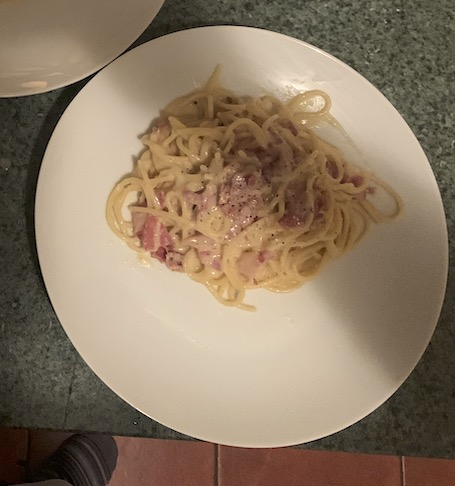

Back
Pasta Carbonara

Description
Pasta Carbonara is a simple dish consisting of pasta, a sauce made by combining fresh eggs with pecorino romano
cheese (though Parmesan or Grana Padano are also used), and some sort of cured meat (traditionally guanciale, but pancetta
and bacon are usual replacements). The dish originated in Rome, hence the name "Romano", and is said to have been the meal
of choice for blue-collar workers in the early 1900s.
Despite it's Roman origins, the dish has become quite popular in the Western hemisphere, as a staple of Italian-American cuisine.
Traditionalists sometimes wince at Western versions of Carbonara, mostly at the addition of non-traditional ingredients such as garlic or the
aforementioned bacon. Nevertheless–regardless of how you decide to do it–Carbonara is a dish that will leave both your heart and belly
full.
Ingredients
Makes 3 servings
- One package (450g) of your pasta of choice
- I recommend a thick, noodle-like pasta such as Fettucini or Bucatini
- 3 eggs
- 1 egg yolk
- 115 g of Pecorino Romano (can also use Parmiggiano Reggiano or Grana Padano)
- 225 of guanciale (or pancetta or bacon)
- Salt
- Pepper
Steps
- Cut your guanciale into chunks
- Set a pan over medium heat and add your guanciale immediately, while the pan is still cold
- Set a pot of water to boil, salt generously
- While the water is boiling, grate your pecorino cheese
- Once the water is boiling, add your pasta, cook according to package directions
- Mix 3 whole eggs and an egg yolk with your cheese, along with a generous amount of black pepper. Mix well
- After the pasta has finished cooking, keep a bit (about 1/4 cup) of past water and drain. Turn off heat of pan with guanciale and turn off heat
- Add your cheese and egg mixture to the pan. Mix vigorously until a rich, luscious sauce has formed
- Eat up!